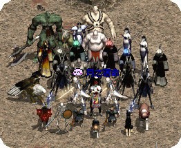
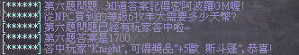
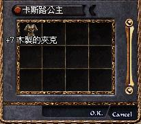

|
2002年6月18日
香港太陽神伺服器 - 月族盟照

圖中還欠惡魔曼陀羅及小巴一金毛一，到目前為止月族血盟中最少有2隻死騎，1隻惡魔及5隻小巴．．．
美國正式伺服器6月18日更新內容
原文：美國天堂官方網站公告
中文翻譯：寶嘉康蒂網站
美國正式伺服器於6/18更新下列事項。
1.現在死亡時會噴下列物品：
‧鑰匙
‧銀鑰匙(推測黃金鑰匙也會)
‧旅館鑰匙
‧狼人之屋的鑰匙
2.現在設定死亡時不會噴蠟燭，不管玩家的正義值如何。
3.傳送回家的卷軸（歌唱之島/隱藏溪谷）可以在任何地方使用，不過只有等級9以下的玩家使用才會發生作用。
4.玩家只能控制和召喚出 魅力／６ 隻的寵物和怪物，王族和法師可以控制/召喚額外1隻，妖精可以控制額外2隻。
5.召喚怪物總類變更：
等級28 狼人
等級32 蜥蜴人
等級36 鼠人
等級40 食人妖精
等級44 骷髏警衛
等級48 食人妖精王
等級52 阿魯巴
6.新手區的傳送師會幫助任何等級的玩家傳送離開此區。
7.法利昂恢複活動。
8.頭目級怪物和龍的能力值增加。
9.新增新道具。
10.龍出現的地方有少量機會會找到龍鱗。。
11.新手區域面貌變更，NPC的位置已不同於之前了。
12.加入新手洞窟和物品。
13.加入新系統：
騎士 - 每三個等級命中率+1，每十個等級攻擊力+1
妖精 - 每五個等級命中率+1，每十個等級弓類攻擊力+1，基本魔防值25
法師 - 基本魔防值15
王族 - 每五個等級命中率+1，基本魔防值10
14.智力會影響施放魔法所耗用的魔力量，智力高可以減少魔力消耗量，另外魔法等級也會影響到減少的魔力消耗量。
15.妖精、法師和王族受到的傷害會比以前稍微多一點，意即根據他們的防禦值所能減輕的傷害量降低，騎士則不受影響。
16.克特重新出現在遊戲中。
17.瑪那魔杖的命中率降低，魔力吸取能力也被輕微的降低。
18.巨蟻女皇攻擊力降低。
19.喝水的延遲時間增加， 橙色和白色藥水的延遲時間是紅色藥水的兩倍。
神愛世人活動結果公佈


香港伺服器在6月15日舉行了神愛世人活動，活動型式和早前的阿波羅話: 比左你又點?!活動差不多，GM會在公頻發問一些關於天堂的問題，然後玩家要鬥快將答案密語給阿波羅GM或邸比特GM，大部分問題的答案都可以在NPC對話中找到，勝利者可以得到一些+4/+5/+7的低階防具，當中以+7皮克夾及+7木製的夾克最為實用，因為給法師用的話比+5皮盔甲或+5法師長袍還要輕呢！
有關該活動的問題、答案及結果大家可以參閱官方的專屬活動網頁。 |